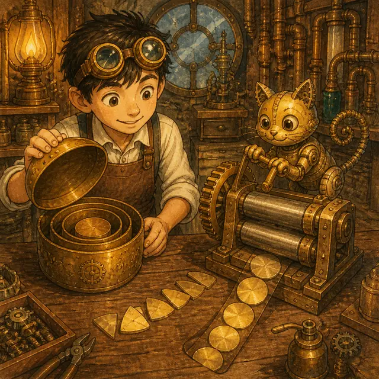

課前暖身漫畫：不打開盒子，也知道裡面有多重
工房裡的黃銅天平已經平了：左盤放著兩個上鎖的鐵盒和 \(3\) 個砝碼，右盤是 \(9\) 個砝碼。鐵盒鎖著，一個盒子有多重沒有人知道——那就先叫它 \(x\)，這台天平於是成了一條方程式：\(2x+3=9\)。機械貓伸手想搬一個盒子去旁邊的小秤單獨秤，小發明家攔住了牠：「不用搬，兩邊同時拿走 \(3\) 個就好。」兩邊各少 \(3\) 個，天平還是平的，剩下兩個盒子對六個砝碼；再把兩邊都只留一半，一個鐵盒正好對三個砝碼。盒子沒有離開天平、也沒有打開，答案就出來了：\(x = 3\)。課本裡的 \(3x+5=14\) 是同一回事，這一節要學的，就是這台天平背後的規則。
重點 1：一元一次方程式的意義——三個條件缺一不可
重點整理與敘述
- 從代數式到方程式，差的就是一個等號。哥哥有 \(14\) 顆糖果，且哥哥的糖果數是妹妹的 \(3\) 倍多 \(5\) 顆。設妹妹有 \(x\) 顆，哥哥就有 \(3x+5\) 顆；而哥哥實際上有 \(14\) 顆，兩個式子講的是同一個數量，所以 \(3x+5=14\)。
- 未知數：式子裡代表一個數、但暫時還不知道是多少的文字符號，例如上面的 \(x\)。含有未知數的等式，就稱為方程式。
- 一元一次方程式的三個條件：
- 是等式——一定要有等號。\(3x+5\) 沒有等號，只是代數式。
- 一元——只含一種未知數。\(2x+3y=7\) 有兩種，不算。
- 一次——未知數的次數是 \(1\)。\(x^2+1=5\) 是二次，不算。
- 用哪個字母無所謂：\(4x-5=17\)、\(2y+8=0\) 都是一元一次方程式。看的是「幾種」和「幾次」，不是「用什麼字母」。
- 未知數在分子還是在分母，差很多：\(\frac{x}{6}=2\) 的 \(x\) 在分子，就是 \(x \div 6=\frac{1}{6}x\)，\(x\) 仍是一次，是一元一次方程式；但 \(\frac{6}{x}=2\) 的 \(x\) 在分母，它不是一次式，不是一元一次方程式。看到分數先看清楚 \(x\) 站在哪一層。
- 沒有未知數的等式不是方程式：\(5+3=8\) 只是一個算完的算式，沒有東西可以解。
| 式子 | 有等號 | 未知數 | 次數 | 是一元一次方程式嗎 |
|---|---|---|---|---|
| \(3x+5=14\) | ✓ | 只有 \(x\) | \(1\) | 是 |
| \(4-x\) | ✗ | 只有 \(x\) | \(1\) | 不是（沒等號） |
| \(x^2+1=5\) | ✓ | 只有 \(x\) | \(2\) | 不是（次數太高） |
| \(2x+3y=7\) | ✓ | \(x\)、\(y\) | \(1\) | 不是（兩種未知數） |
| \(\frac{x}{6}=2\) | ✓ | 只有 \(x\) | \(1\) | 是 |
視覺互動探索：方程式身分檢查台
點一個式子送上檢查台，三盞燈分別檢查有沒有等號、是不是只有一種未知數、次數是不是 1。三盞全亮才過關：
形成性評量 (一元一次方程式的意義)
Q1. 下列何者是一元一次方程式？
解析：答案為 D。\(7-4x=9\) 有等號、只含一種未知數 \(x\)、\(x\) 的次數是 \(1\)，三個條件都符合。
A 錯在沒有等號，那是代數式不是方程式。
B 錯在同時含有 \(x\) 與 \(y\)，是二元一次方程式。
C 錯在 \(x\) 的次數是 \(2\)，是一元二次方程式。
Q2. 關於方程式，下列敘述何者錯誤？
解析：答案為 C。\(3x+5\) 沒有等號，它是一元一次式（上一節的內容），不是方程式。
A 正確：方程式的定義就是「含有未知數的等式」。
B 正確：未知數用 \(y\) 也可以，只要是一種、一次就好。
D 正確：\(\frac{x}{4}=x \div 4=\frac{1}{4}x\)，\(x\) 的次數仍是 \(1\)。
重點 2：用文字符號列式——把一句話翻成一條方程式
重點整理與敘述
- 列式三步驟：
- 設未知數：把題目問的、或還不知道的那個數設成 \(x\)（或 \(y\)、\(a\)）。
- 照文字的順序寫左半邊：一個詞一個動作，不要跳著寫。
- 把「是」「共」「等於」寫成等號，右半邊補上去。
- 關鍵字對照：大／多 → 加；小／少 → 減；倍 → 乘；分成 \(n\) 等分 → 除以 \(n\)。
- 課本例題：媽媽買了 \(6\) 盒牛奶，每盒 \(x\) 元，另外買了 \(120\) 元的麵包，結帳共付 \(300\) 元。\(6\) 盒牛奶是 \(6x\) 元，加上麵包 \(120\) 元，總共 \(300\) 元，得 \(6x+120=300\)。
- 加減乘除的順序要看清楚：「比 \(c\) 的 \(2\) 倍多 \(10\) 的數是 \(6\)」是 \(2c+10=6\)；如果寫成 \(2(c+10)=6\) 就變成「比 \(c\) 多 \(10\) 之後再取 \(2\) 倍」，意思完全不同。
- 「每一份都…」要用括號包起來。這是上一節列式的老規矩，到了方程式一樣適用。
- 年齡問題的小陷阱：\(n\) 年前（後），每個人都要一起加減。媽媽今年 \(36\) 歲、意紋今年 \(x\) 歲，三年前媽媽的年齡是意紋的 \(3\) 倍，要寫成 \(36-3=3(x-3)\)，不是 \(36-3=3x-3\)。
| 文字敘述 | 一元一次方程式 |
|---|---|
| 比 \(x\) 大 \(7\) 的數是 \(-5\) | \(x+7=-5\) |
| 比 \(y\) 小 \(4\) 的數是 \(21\) | \(y-4=21\) |
| \(18\) 是 \(x\) 的 \(\frac{3}{4}\) 倍 | \(18=\frac{3}{4}x\) |
| 把 \(a\) 分成 \(5\) 等分，每份都是 \(6\) | \(\frac{a}{5}=6\) |
| 比 \(c\) 的 \(3\) 倍多 \(8\) 的數是 \(2\) | \(3c+8=2\) |
視覺互動探索：文字敘述翻譯機
選一句敘述，再按「下一步」：機器會先認出未知數、再翻左半邊、最後補上等號與右半邊。看清楚每個詞變成了什麼：
形成性評量 (用文字符號列式)
Q1. 今年姊姊的年齡恰好是弟弟年齡的 \(3\) 倍少 \(4\) 歲。若弟弟今年 \(y\) 歲、姊姊今年 \(29\) 歲，依題意可列出的方程式為何？
解析：答案為 B。「\(3\) 倍少 \(4\) 歲」是先取 3 倍，再減 4：姊姊的年齡是 \(3y-4\)，而姊姊是 \(29\) 歲，所以 \(3y-4=29\)。
A 錯在把「少 \(4\)」寫成加法。
C 錯在括號的位置：\(3(y-4)\) 的意思是「弟弟先少 \(4\) 歲，再取 \(3\) 倍」。
D 錯在完全沒有取 \(3\) 倍。
Q2. 「比 \(x\) 的 \(\frac{3}{4}\) 倍小 \(6\) 的數是 \(-2\)」，列成一元一次方程式為何？
解析：答案為 A。照文字順序：先取 \(x\) 的 \(\frac{3}{4}\) 倍得 \(\frac{3}{4}x\)，再「小 \(6\)」就是減 \(6\)，最後「是 \(-2\)」寫成等號，得 \(\frac{3}{4}x-6=-2\)。
B 錯在括號把順序弄反了。
C 錯在把「比 A 小 6」寫成「6 減 A」——比 A 小 6 是 \(A-6\)。
D 錯在把 \(\frac{3}{4}\) 倒過來寫成 \(\frac{4}{3}\)。
重點 3：方程式的解——哪一個數能讓天平真的平起來
重點整理與敘述
- 什麼是解：方程式中，未知數所代表的數，若能使等號兩邊的值相等，就稱此數為這個方程式的解，也叫做根。
- 什麼是解方程式：求出未知數所代表的數的過程，稱為解方程式。
- 檢驗的方法就是代入。以 \(3x+5=14\) 為例，把 \(x\) 逐一代進去算左邊的值：\(x=1\) 得 \(8\)，\(x=2\) 得 \(11\)，\(x=3\) 得 \(14\)。只有 \(x=3\) 讓左右兩邊都是 \(14\)，所以 \(3\) 是解，\(1\) 和 \(2\) 都不是。
- 代入負數一定要加括號：檢驗 \(x=-2\) 是不是 \(-2x+3=-19\) 的解，要寫成 \((-2) \times (-2)+3=7\)，兩個運算符號或性質符號不可以相鄰。
- 算完要下結論：承上一點，把 \(x=-2\) 代進去以後，等號左邊算出來是 \(7\)、右邊是 \(-19\)，兩邊不相等，所以 \(-2\) 不是 \(-2x+3=-19\) 的解。檢驗的結果只有「是」或「不是」兩種，算完一定要把這句結論寫出來。
- 為什麼不能一直用代入法：課本的 \(75x+84(30-x)=1980\)，光靠一個一個試，過程繁瑣又不容易試中。我們需要一套一定找得到解的方法——那就是下一個重點的等量公理。
| 代入的 \(x\) | \(3x+5\) 的值 | 是否等於 \(14\) |
|---|---|---|
| \(1\) | \(3 \times 1+5=8\) | 否 |
| \(2\) | \(3 \times 2+5=11\) | 否 |
| \(3\) | \(3 \times 3+5=14\) | 是（\(x=3\) 是解） |
視覺互動探索：代入檢驗天平
拉滑桿把 \(x\) 一個一個代進去，看左盤的重量怎麼跟著變。只有一個值能讓天平真的平起來，那個值就是解：
形成性評量 (方程式的解)
Q1. 下列哪一個數是方程式 \(-3x+4=-11\) 的解？
解析：答案為 C。把 \(x=5\) 代入左邊：\((-3) \times 5+4=-15+4=-11\)，與右邊相等，所以 \(5\) 是解。
A：\((-3) \times (-5)+4=19 \neq -11\)。
B：\((-3) \times 3+4=-5 \neq -11\)。
D：\((-3) \times (-3)+4=13 \neq -11\)。代入負數時記得加括號。
Q2. \(x=-2\) 是下列哪一個方程式的解？
解析：答案為 A。代入得左邊 \(5 \times (-2)+3=-10+3=-7\)，右邊 \(-7\)，兩邊相等。
B：左邊 \(4-(-2)=6\)，右邊 \(-2\)，\(6 \neq -2\)。
C：左邊 \(-2+6=4\)，右邊 \(2 \times (-2)-1=-5\)，不相等。
D：左邊 \(3 \times (-2)-2=-8\)，右邊 \(-2+5=3\)，不相等。兩邊都有未知數時，兩邊都要代。
重點 4：等量公理——兩邊做一樣的事，天平不會歪
重點整理與敘述
- 等量公理：在等號的兩邊同加、同減、同乘、同除以一個數（除數不可為 \(0\)），等號兩邊仍會維持相等。
- 等量加法公理：天平左邊 \(2x\) 公克、右邊 \(4\) 公克時 \(2x=4\)。兩邊同時放上 \(10\) 公克，天平仍然平衡，得 \(2x+10=4+10\)。
- 等量減法公理：天平左邊 \(2x+5\)、右邊 \(9\) 時 \(2x+5=9\)。兩邊同時拿走 \(5\) 公克，天平仍然平衡，得 \(2x+5-5=9-5\)。
- 等量乘法公理：\(2x=4\) 的兩邊重量同時變成 \(3\) 倍，天平仍然平衡，得 \(2x \times 3=4 \times 3\)。
- 等量除法公理：\(2x=4\) 的兩邊同時只留下一半，天平仍然平衡，得 \(\frac{2x}{2}=\frac{4}{2}\)。
- 加減負數也成立：加上負數等於減去正數（\(3x+(-5)=3x-5\)），減去負數等於加上正數（\(3x-(-5)=3x+5\)），所以兩邊同加或同減一個負數，等式一樣成立；同乘、同除以一個負數也一樣。
- 唯一的限制：除數不可為 \(0\)。所以「若 \(a \times c=b \times c\)，則 \(a=b\)」是錯的——當 \(c=0\) 時，\(a\)、\(b\) 是什麼都成立，不能同除以 \(c\)。
- 解方程式的策略：用等量公理先把常數項清掉，再把 \(x\) 項的係數變成 1，左邊只剩一個 \(x\) 時，右邊就是答案。
| 公理 | 天平的動作 | 算式 |
|---|---|---|
| 等量加法 | 兩邊同時放上 \(10\) 公克 | \(2x=4 \Rightarrow 2x+10=4+10\) |
| 等量減法 | 兩邊同時拿走 \(5\) 公克 | \(2x+5=9 \Rightarrow 2x+5-5=9-5\) |
| 等量乘法 | 兩邊同時變成 \(3\) 倍 | \(2x=4 \Rightarrow 2x \times 3=4 \times 3\) |
| 等量除法 | 兩邊同時只留一半 | \(2x=4 \Rightarrow \frac{2x}{2}=\frac{4}{2}\) |
視覺互動探索：等量公理操作台
自己選動作與數字，按下「兩邊一起做」。不管你怎麼做，天平永遠是平的；目標是把左盤清到只剩一個鐵盒：
形成性評量 (等量公理)
Q1. 關於等量公理，下列敘述何者錯誤？
解析：答案為 D。要從 \(a \times c=b \times c\) 推到 \(a=b\)，必須兩邊同除以 \(c\)，但等量除法公理規定除數不可為 \(0\)。當 \(c=0\) 時，\(3 \times 0=5 \times 0\) 也成立，可是 \(3 \neq 5\)。
A、B、C 都是等量公理的正確使用：同減一個數、同乘一個負數、同除以一個不為 \(0\) 的數，等式都仍然成立。
Q2. 要把 \(5x+3=18\) 化簡成 \(5x=15\)，用到的是下列哪一個公理？
解析：答案為 B。兩邊同減 \(3\)：\(5x+3-3=18-3\)，左邊的 \(+3-3=0\) 可以省略不寫，得 \(5x=15\)，用的是等量減法公理。
接下來若要解出 \(x\)，還要再用等量除法公理兩邊同除以 \(5\)，得 \(x=3\)。解一題方程式常常會用到不只一個公理。
重點 5：移項法則——等量公理的快速寫法
重點整理與敘述
- 移項法則：把某一項移到等號的另一邊，且加變減、減變加、乘變除、除變乘，這種解方程式的方法稱為移項法則。
- 移項不是新規則，是等量公理的簡寫。解 \(x-7=15\) 時，兩邊同加 \(7\) 得 \(x-7+7=15+7\)；因為 \(-7+7=0\)，這一段可以省略不寫，直接寫成 \(x=15+7\)。看起來像「搬過去」，其實是兩邊同時加了 7。
- 四種移項一次看：
- \(x-7=15 \Rightarrow x=15+7\)（減號移項變加號）
- \(23=x+17 \Rightarrow 23-17=x\)（加號移項變減號）
- \(\frac{x}{7}=-3 \Rightarrow x=(-3) \times 7\)（除號移項變乘號）
- \(x \times 3=12 \Rightarrow x=\frac{12}{3}\)（乘號移項變除號）
- 習慣把未知數寫在左邊：算出 \(6=x\) 時，寫成 \(x=6\)。
- 兩邊都有未知數時：先把含 \(x\) 的項集中到等號一邊、常數項集中到另一邊。例如 \(5x=2x+6\)，把 \(2x\) 移到左邊變 \(-2x\)，得 \(5x-2x=6\)，即 \(3x=6\)，再把 \(\times 3\) 移過去變 \(\div 3\)，得 \(x=2\)。
- 最常見的兩個錯誤：一是移項忘了變號；二是把除法反過來寫——由 \(6x=3\) 只能得 \(x=\frac{3}{6}=\frac{1}{2}\)，不是 \(6 \div 3\)。
- 驗算：把答案代回原方程式（不是代回中間某一行），確認等號兩邊的值相等。小心計算的話可以省略，但考試時多花十秒很值得。
視覺互動探索：移項傳送帶
選一題，按「下一步」看那一項跨過等號的瞬間。注意它過去之後變成什麼符號——這就是移項法則：
形成性評量 (移項法則)
Q1. 解方程式 \(7x-4=5x-10\)，得 \(x=\) ？
解析：答案為 C。含 \(x\) 的移到左邊、常數移到右邊，跨過等號的每一項都要變號：
\[ \begin{aligned} & 7x-5x = -10+4 \\ & 2x = -6 \\ & x = -3 \end{aligned} \]
驗算：左邊 \(7 \times (-3)-4=-25\)，右邊 \(5 \times (-3)-10=-25\)，兩邊相等。
常見錯誤是把 \(-10\) 移過去忘了變號，得到 \(2x=-14\)。
Q2. 關於移項，下列敘述何者正確？
解析：答案為 D。\(-6\) 移到等號右邊要變成 \(+6\)，得 \(x=-1+6=5\)。
A 錯在 \(+5\) 移過去應該變成 \(-5\)，正確是 \(x=2-5=-3\)。
B 錯在把除法寫反了：\(\times 6\) 移過去變 \(\div 6\)，正確是 \(x=\frac{3}{6}=\frac{1}{2}\)。
C 錯在 \(\div 4\) 移過去應該變成 \(\times 4\)，正確是 \(x=8 \times 4=32\)。
重點 6：括號與分數——先整理，再移項
重點整理與敘述
- 有括號就先去括號。括號前面是數字時用分配律，每一項都要乘到；括號前面是減號或負號時，裡面每一項都要變號。
- 多層括號由內而外：先小括號，再中括號。例如 \(3[2(1-x)+4x]=8\)，先把小括號拆成 \(3[2-2x+4x]\)，合併成 \(3[2+2x]\)，再去中括號得 \(6+6x=8\)。
- 有分數就先清分母：兩邊同乘所有分母的最小公倍數（等量乘法公理）。例如 \(\frac{1}{3}x=\frac{7}{6}-\frac{1}{4}x\) 兩邊同乘 \(12\)，得 \(4x=14-3x\)。
- 最容易錯的一步：常數項也要乘。\(\frac{7x}{5}-\frac{4x-5}{3}=1\) 兩邊同乘 \(15\) 時，右邊的 \(1\) 也要變成 \(15\)，不是還留著 \(1\)。「兩邊同乘」是整條式子的每一項都乘，不是只乘有分母的那幾項。
- 分子是多項式時要加括號：\(\frac{x-3}{2} \times 6=3(x-3)=3x-9\)，如果漏了括號寫成 \(3x-3\) 就錯了。
- 整理好之後，剩下的就是移項：含 \(x\) 的往一邊、常數往另一邊，合併同類項，最後把 \(x\) 項的係數變成 \(1\)。
- 解的檢查：答案代回原來那條有括號、有分數的方程式，才算真的驗算過。

視覺互動探索：括號與分數推導器＋挑錯台
「逐行推導」模式一行一行拆給你看；切到「挑錯題」模式，會出現別人的解法——直接在畫面上點出從哪一行開始錯：
形成性評量 (括號與分數的方程式)
Q1. 解方程式 \(-3[2(x-1)-x]=9\)，得 \(x=\) ？
解析：答案為 A。由內而外拆括號： \[ \begin{aligned} & -3[2x-2-x] = 9 \\ & -3[x-2] = 9 \\ & -3x+6 = 9 \\ & -3x = 3 \\ & x = -1 \end{aligned} \] 去中括號時 \(-3\) 要乘到裡面每一項：\(-3 \times x=-3x\)、\(-3 \times (-2)=+6\)。漏乘或忘了變號是這題最常見的錯誤。
Q2. 解 \(\frac{x+5}{2}=\frac{x-1}{3}+1\) 時，兩邊同乘 \(6\)，正確的下一行應該是？
解析：答案為 B。兩邊同乘 \(6\)：左邊 \(\frac{x+5}{2} \times 6=3(x+5)\)，右邊兩項都要乘——\(\frac{x-1}{3} \times 6=2(x-1)\)，而常數 \(1 \times 6=6\)。
A 錯在常數項 \(1\) 忘了乘 \(6\)，這正是課本挑錯題裡小翊犯的錯，答案會整個跑掉。
C 錯在把兩個分母的倍數對調了。
D 錯在分子是多項式卻沒有加括號，\((x+5)\) 整包都要乘 \(3\)。
正確解下去：\(3x+15=2x-2+6\)，得 \(x=-11\)。
小節總結與核心回顧
一元一次方程式快速檢索卡
- 方程式：含有未知數的等式。沒有等號的只是代數式。
- 一元一次方程式：只含一種未知數（一元）、未知數的次數是 \(1\)（一次）的等式。
- 列式三步驟：設未知數 → 照文字順序寫左邊 → 「是／共」寫成等號。多用加、少用減、倍用乘、等分用除。
- 解（根）：能使等號兩邊的值相等的那個數。求解的過程叫解方程式。
- 檢驗：代回原方程式算兩邊。代入負數要加括號。
- 等量公理：兩邊同加、同減、同乘、同除以一個數（除數 \(\neq 0\)），等號仍成立。
- 移項法則：把某項移到另一邊，加變減、減變加、乘變除、除變乘——它就是等量公理的簡寫。
- 兩邊都有未知數：含 \(x\) 的集中一邊、常數集中另一邊，再合併同類項。
- 有括號：先去括號，括號前是負號時裡面每一項都變號；多層括號由內而外。
- 有分數：兩邊同乘分母的最小公倍數，每一項都要乘到，分子是多項式時要加括號。
- 兩個經典錯誤：一、移項忘了變號——由 \(x+5=2\) 誤寫成 \(x=2+5\)（正確是 \(x=2-5=-3\)）；二、把除法寫反了——由 \(6x=3\) 誤寫成 \(x=6 \div 3\)（正確是 \(x=\frac{3}{6}=\frac{1}{2}\)）。
回到工房：那三個沒有打開的盒子
從一台天平到一條規則
漫畫裡的天平左盤是三個鐵盒加五個砝碼、右盤十四個砝碼，寫成數學就是 \(3x+5=14\)。小發明家做的第一件事是兩邊同時拿走五個砝碼——這就是等量減法公理，得到 \(3x=9\)；第二件事是把兩邊都分成三等分，這是等量除法公理，得到 \(x=3\)。
整個過程只做了兩個動作，而且兩個動作都是「兩邊一起做」。天平從頭到尾沒有歪過，這正是解方程式一定會成功的理由：每一行式子的解都和上一行完全一樣，只是長得越來越簡單。
為什麼還要學移項
寫熟之後，\(3x+5=14\) 的中間那行 \(3x+5-5=14-5\) 每次都要寫實在太慢，於是我們直接寫成 \(3x=14-5\)——這就是移項。移項不是另一套規則，它只是等量公理省略了中間一行的寫法。
等號是誰發明的
方程式的核心是等號，但等號 \(=\) 其實很年輕。西元 \(1557\) 年，威爾斯數學家雷科德在著作裡首次使用兩條平行線代表相等，理由很單純：沒有兩樣東西比兩條等長的平行線更相等。在那之前，人們得用一整句拉丁文寫「等於」。至於解方程式本身則老得多——中國《九章算術》的第八章就叫〈方程〉，古埃及的紙草書裡也有「某數加上它的七分之一等於十九」這類題目，用的方法叫「試位法」，其實就是課本裡那張代入表格的祖先。